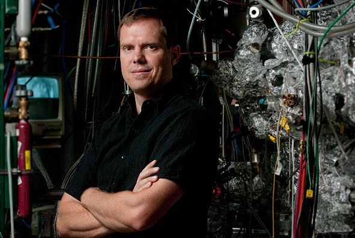

Nicholas A. Melosh

Email: nmelosh AT stanford.edu
Telephone: (650) 724-3679
Fax: (650) 736-1984
Office: McCullough Building, Room 223. 476 Lomita Mall, Stanford CA 94305
Affiliations:
Geballe Laboratory for Advanced Materials,
Stanford Institute
for Materials & Energy Science (
SLAC),
Stanford University Bio-X
Program, Center for Probing the Nanoscale
(
NSF NSEC)
Biography:
Nicholas A. Melosh received his B.S. in chemistry from
Harvey Mudd College in 1996. He did his graduate work on block-copolymer silica composites with
Brad Chmelka and
Galen Stucky at the
University of California at Santa Barbara, receiving a Ph.D in materials science and engineering in 2001. His postdoctoral training was on molecular electronics and nanoscale patterning with
Jim Heath at the
University of
California, Los Angeles and the
California Institute of Technology from
2001-2003. He joined
Stanford University as an assistant professor of materials science and engineering in September 2003.
Melosh's research interests include molecular electronics and plasmonics, diamondoids, dynamic self-assembly of biomolecules and lipid bilayers as nano-bio interfaces. He is a recipient of the
NSF Faculty Early Career Development (CAREER) Award,
the Frederick E. Terman Fellowship and the
MDV Innovators
Award.
Selected Publications (prior to Stanford):
Mesostructured
silica/block copolymer composites as hosts for optically limiting tetraphenylporphyrin
dye molecules.
N.A. Melosh, C.A. Steinbeck, B.J. Scott, R.C. Hayward, P.
Davidson, G.D. Stucky, B.F. Chmelka.
Journal of Physical Chemistry B. 108,
11909 (2004)
Ultra
High Density Nanowire Lattices and Circuits.
N.A. Melosh, A. Boukai, F. Diana, B.
Gerardot, A. Badolato, P.M. Petroff and J.R. Heath.
Science,
300, 112-115 (2003)
Macroscopic
Shear Alignment of Bulk Transparent Mesostructured Silica.
N.A. Melosh, P. Davidson, P. Feng, D. J. Pine and B. F.
Chmelka.
Journal
of the American Chemical Society,
123 (6), 1240-1241
(2001).
Monolithic
Mesophase Silica with Large Ordering Domains.
N.A. Melosh, P. Davidson and B. F. Chmelka.
Journal of
the American Chemical Society,
122 (5), pp 823-829
(2000).
Molecular
and Mesoscopic Structures of Transparent Block Copolymer-Silica Monoliths.
N.A. Melosh, P. Lipic, F.S. Bates, G. D. Stucky, F.
Wudl, G. H. Fredrickson and B. F. Chmelka.
Macromolecules.
32 (13), 4332-4342 (1999)